WHOOSH!
Все на борьбу с гиподинамией
"В моем понимании интерактивно любое произведение искусства и дизайна, даже если оно напечатано на бумаге или выгравировано на рисовом зернышке", пишет мой друг и арт-директор Роман Павленко в своем блоге. Это как бы эпиграф, к дальнейшему разговору относится довольно косвенно. Коллега, специализирующийся на моушн-дизайне, как-то сказал мне следующее: "Я как лягушка: все, что не движется, не существует". Из этого следовало, что видео интереснее, чем иллюстрация. Меня помню, сильно задело за живое - как это статичная картинка не может двигаться? Еще как может.
Paul Pope, мощнейший и оригинальнейший из нового поколения комиксеров, и именно в смысле рисунка - ищите и вдохновляйтесь.
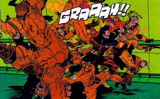
Другое дело, что средствами анимации показать движение - проще простого, и средствами комикса - тоже не фунт изюма: движение происходит пусть не 24 кадра в секунду, но все-таки при нужде можно посвятить одному действию целую полосу, и между жвумя кадрами зритель дофазует движение сам.
Константин Комардин,тоже очень крут.
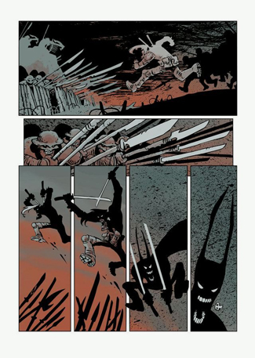
Создать движение в рамках одной иллюстрации сложнее всего, и тем круче выглядят те, где это случилось.
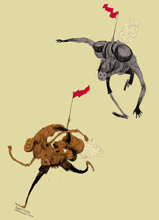
Наиболее популярный способ - и притом наименее эффективный, чудовищно переоцениваемый - разнобразный whoosh и motion blur, которые банально не работают, если нет движения в самом изображении. Вот например
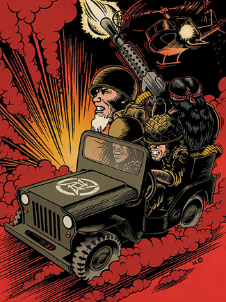
- машинка стоит на месте, зажатая краями листа, огромные головы подчеркивают игрушечность и статичность - так что пыль из-под колес в данном случае работает против автора. Динамика в рисунке - бесконечный разговор, и в большой степени бессмысленный, главное тут молча раскачивать рисовальную мышцу. Лучший для этого способ (упоминал про него уже, все не соберусь повесить примеров с занятий в британке)- рисование с Ютьюба. Всего подряд; рекомендую у-шу, фигурное катание, и горилл. Желательно без пауз, лучше всего кистью на большом листе. Каллиграфия с натуры:
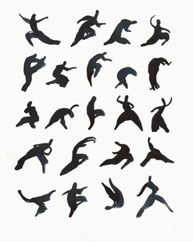
Дмитрий Литвин (вообще следите за этим парнем)
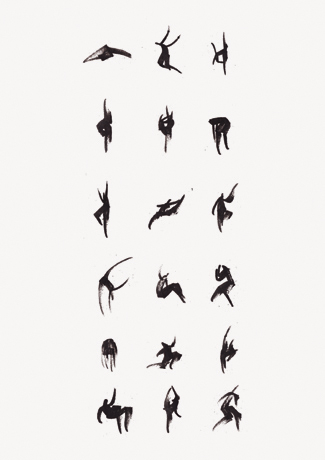
В этом упражнении, кстати, приятно еще и то, что получается оно у всех - просто концентрация гениальных попаданий разная.
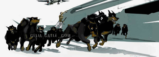
Вешал уже, но по другому поводу. Хороший пример - тут несколько разных собак по сути работают как фазы одного и того же движения, засчет чего и без того динамичный рисунок начинает по-настоящему заносить на повороте. Занятно, что тот же оптический эффект можно использовать не прибегая к экспрессивному рисованию. Способ древний, но сейчас как-то заметно популярный среди современных иллюстраторов, и главным образом как раз по причине того, что не требует сколько-нибудь заметных энергозатрат.
Том Голд по этой части большой специалист.
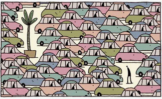
Марк Коник Вот тут - вроде все фигуры статичные - но движение людей туда-сюда чувствуется очень ясно.
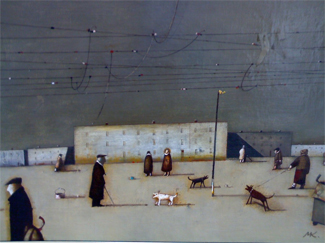
Довольно долго не мог понять, как работы пресловутого Нейта Уильямса, по форме чисто декоративные, все-таки живут. Ответ нашелся такой: в них движение направлено не справа налево и вообще лежит вне плоскости картинки - монитора в данном случае - а перпендикулярно ему, поршнеобразно пузырится и пульсирует. Сразу стал ясен смысл регулярного повтора одних и тех же элементов - в них весь фокус, за них цепляется глаз, и, перебегая с одного на другой, работает как игла патефона: череп-череп, череп-череп.
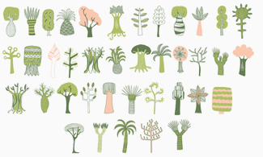
В общем, можно и так, миленько и уныленько, но мы ведь не ищем легких путей, правда?
Вообще лучший пример движения в статичной картинке, который я в своей жизни видел, вот:
написано: "реальная скорость"
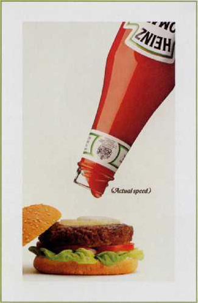
Ну так вот, а теперь PS, минутку внимания. На правах рекламы. Меня тут время от времени спрашивают насчет курсов и тому подобного - так вот, 8го Июля мы, а именно инициативная часть объединения иллюстраторов "Цех", начинаем первый в истории Британской Школы (а может, и вообще) недельный интенсив по иллюстрации. Успех мероприятия тут зависит в большой степени от состава гостей, так что приходите, время еще есть. Мы со своей стороны гарантируем семь спущенных шкур, массу новых идей и знакомств.